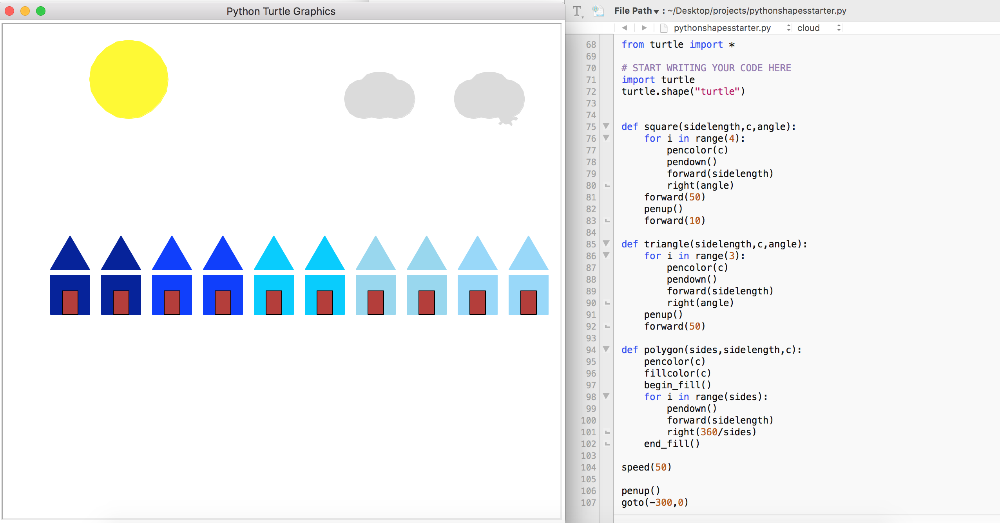
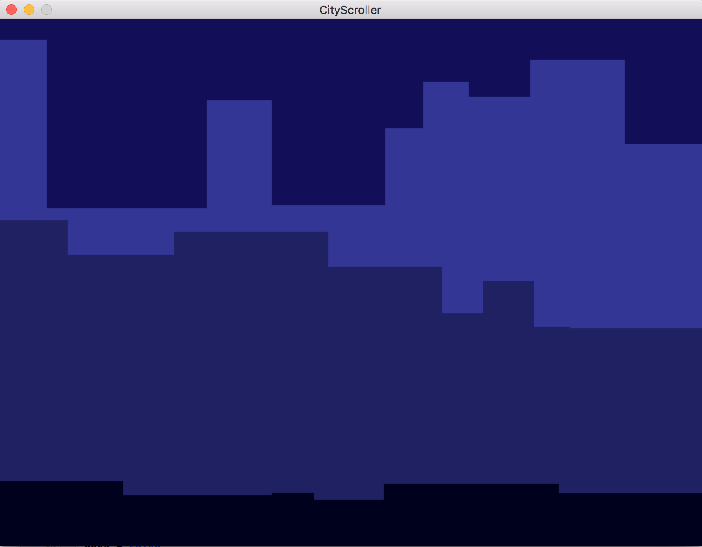
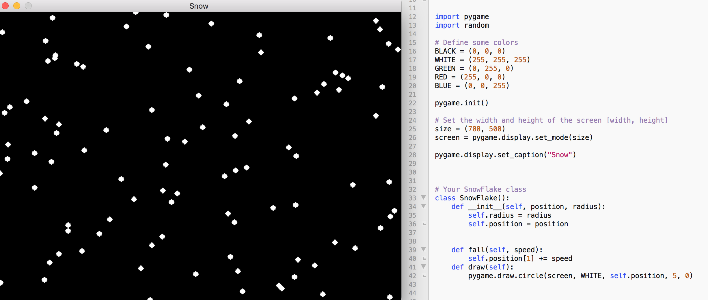
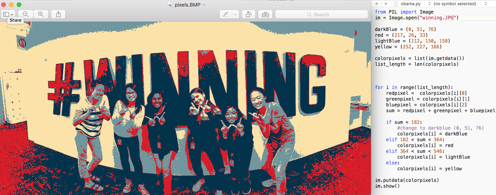
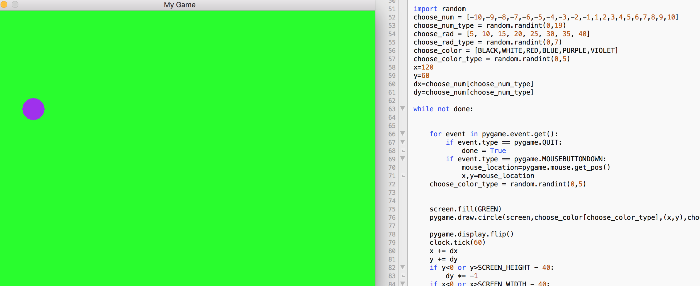

Erin's GWC SIP Portfolio Erin's GWC SIP Portfolio
Erin's GWC SIP Portfolio Erin's GWC SIP Portfolio Hi, my name is Erin Woo. I am a rising senior at Burlingame High School and this is my first year learning how to code at Twitter with Girls Who Code. Here is a collection of all of the work I have done so far in the program.
This is one of the first major projects we began with on Scratch. We applied our knowledge on loops and conditionals and created a simple paddle ball game. The game ends when the ball falls below the paddle. Click the green flag to begin!
This is the second game we programmed on Scratch. The task was a little more difficult than the last because many of the variables rely on each other and work together. The directions are stated at the beginning of the game.
In this project, we used Pygame for the first time to draw a landscape. This project allowed us to practice using loops in Python. It took the longest to program the specific dimensions of each item so they all perfectly aligned.
Definitely the most difficult project we worked on so far. It required us to use our knowledge on object oriented programming, as each of the three scrollers had their own varying properties such as speed, dimensions, and color.
This project was also difficult (many of the projects on Pygame were difficult haha). Most of the programming dealt with randomizing the locations of the snowflakes and setting the direction in which the snowflakes would fall in.
The purpose of this program was to transform any picture with a specific color palette. The data of each pixel in an image is read as 3 RBG values, which is then calculated to see which color it would most closely corelate to in the given color palette.
This project was probably the most time consuming, considering that we spent most of our time debugging the program. I think the most difficult part was controlling the motion of the ball, and changing its movement each time it bounced off an edge.
We played around using APIs and learned how to integrate maps into our websites. This map shows the area around my high school.